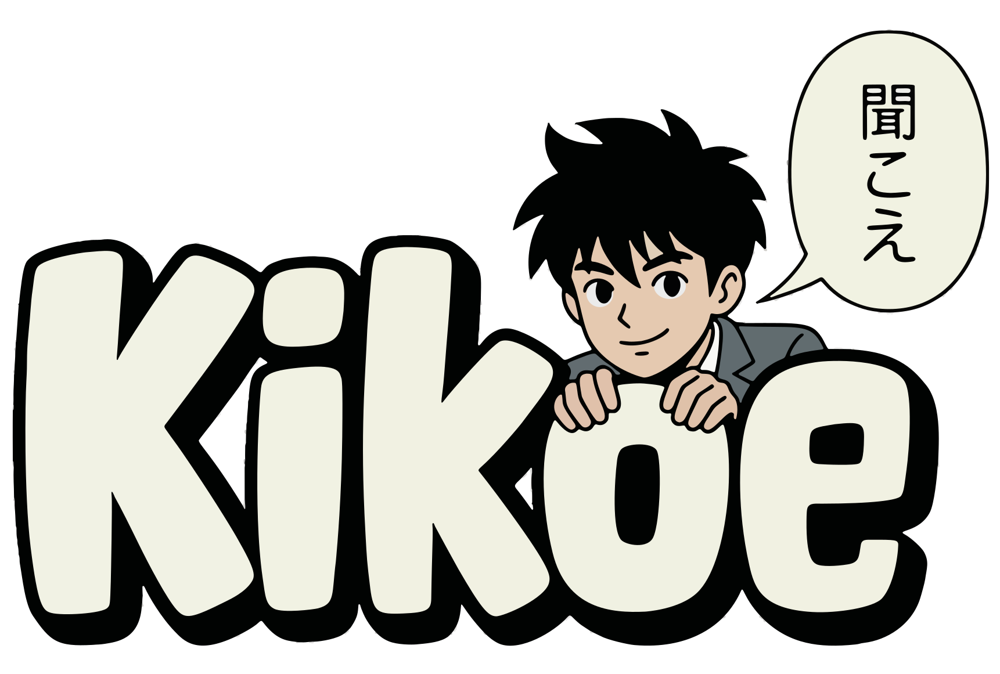

Voice answers for WaniKani & BunPro
Open a WaniKani or BunPro review page and start listening. When your browser asks for microphone access, choose Allow.
When speech recognition keeps mishearing an answer, map what it heard to what you meant. Corrections apply to both readings and meanings, take precedence over the built-in tables, and take effect on your next answer. You can also click a "no match" transcript bubble during reviews to save a correction for the current answer.
No corrections yet.